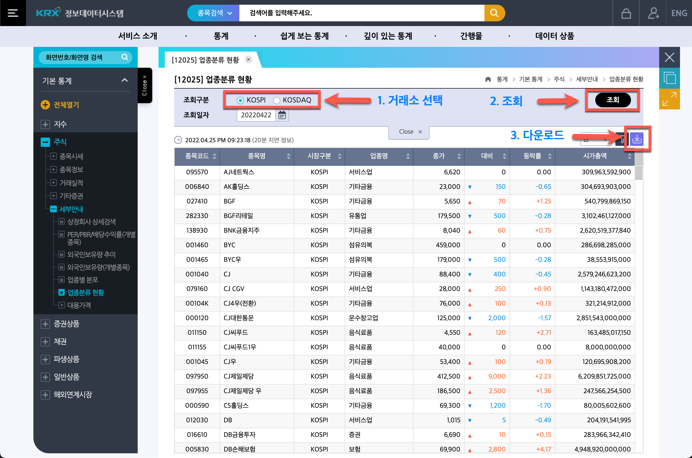
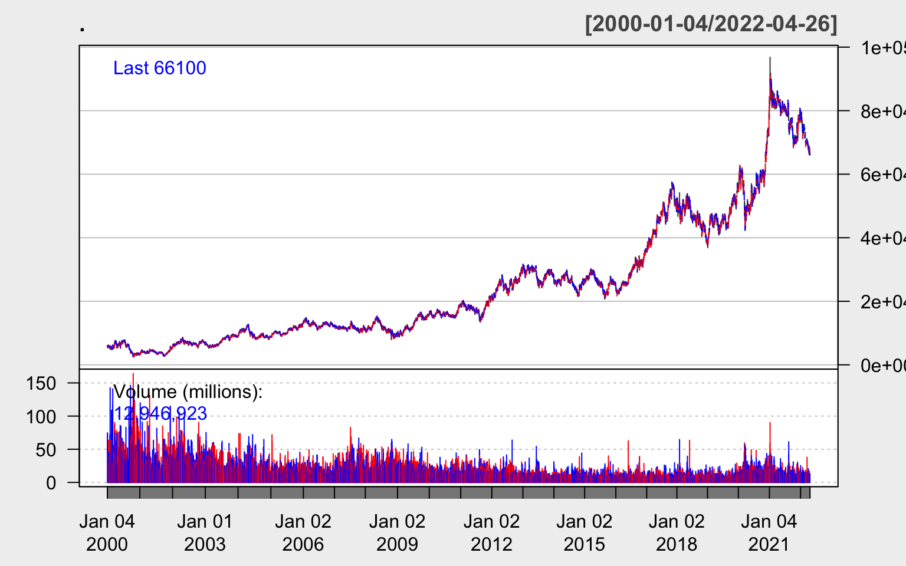
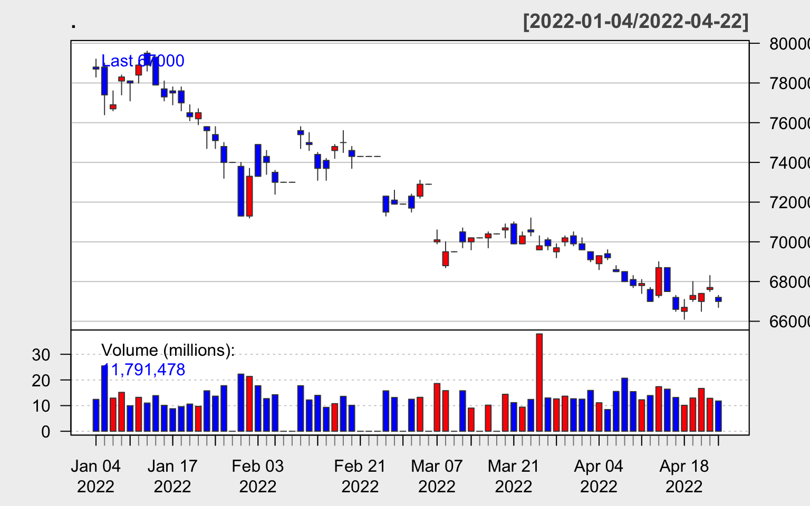
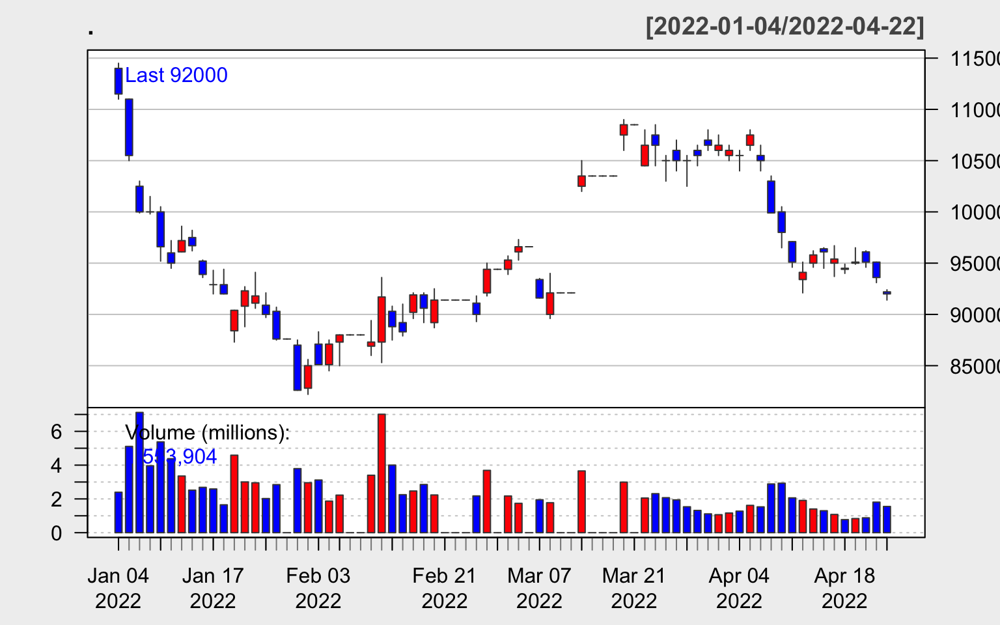
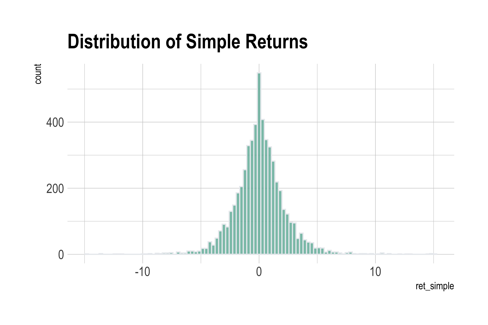

동학개미를 위한 국내 주식 시장의 거래 정보를 수집하고, 이 데이터를 이용해서 수익률과 Value-at-Risk, 연간 성장률을 구하는 방법을 다루어 봅니다.
주식의 문외한이라서 오류가 있을 수 있음을 밝혀둡니다.
한국 거래소(KRX) 정보데이터 시스템즈의 기본통계>주식>세부안내> 업종분류 현황에서 조회하고 다운 받을 수 있습니다.
해당 페이지는 다음 그림과 같으며,

이 페이지에서는 다음과 같은 두 개 거래 시장에 대한 종목 코드를 획득할 수 있습니다.
필자의 경우, KOSPI 파일은 “data_2719_20220425.csv”, KOSDAQ 파일은 “data_2733_20220425.csv”로 다음로드 되었습니다. 두 개의 파일을 읽어 다음처럼 데이터 프레임 객체를 만듭니다.
가져온 2개 거래소의 종목코드 정보는 다음과 같습니다. KOSDAQ에 약 62%가 상장되어 있습니다.
symbol_korea %>%
group_by(시장구분) %>%
tally() %>%
mutate(pct = n /sum(n) * 100) %>%
rename(
"거래소" = 시장구분,
"종목수" = n,
"비율(%)" = pct
) %>%
kableExtra::kable(digits = 2, format.args = list(big.mark = ",", scientific = FALSE)) %>%
kableExtra::kable_styling(bootstrap_options = c("striped", "hover"))
| 거래소 | 종목수 | 비율(%) |
|---|---|---|
| KOSDAQ | 1,555 | 62.35 |
| KOSPI | 939 | 37.65 |
2022년 4월 22일 기준으로 시가총액 상위 10위 회사의 목록은 다음과 같습니다. 삼성전자가 약 400조원의 시가총액으로 Top 1에 랭크되어 있습니다.
symbol_korea %>%
arrange(desc(시가총액)) %>%
filter(row_number() <= 10) %>%
mutate(시가총액 = 시가총액 / 1000000000000) %>%
rename("시가총액(단위:조원)" = 시가총액) %>%
kableExtra::kable(digits = 2, format.args = list(big.mark = ",", scientific = FALSE)) %>%
kableExtra::kable_styling(bootstrap_options = c("striped", "hover"))
| 종목코드 | 종목명 | 시장구분 | 업종명 | 종가 | 대비 | 등락률 | 시가총액(단위:조원) |
|---|---|---|---|---|---|---|---|
| 005930 | 삼성전자 | KOSPI | 전기전자 | 67,000 | -700 | -1.03 | 399.98 |
| 373220 | LG에너지솔루션 | KOSPI | 전기전자 | 436,500 | -500 | -0.11 | 102.14 |
| 000660 | SK하이닉스 | KOSPI | 전기전자 | 110,500 | -2,500 | -2.21 | 80.44 |
| 207940 | 삼성바이오로직스 | KOSPI | 의약품 | 801,000 | -5,000 | -0.62 | 53.00 |
| 005935 | 삼성전자우 | KOSPI | 전기전자 | 60,400 | -200 | -0.33 | 49.70 |
| 035420 | NAVER | KOSPI | 서비스업 | 300,000 | -9,500 | -3.07 | 49.21 |
| 035720 | 카카오 | KOSPI | 서비스업 | 92,000 | -1,600 | -1.71 | 41.06 |
| 006400 | 삼성SDI | KOSPI | 전기전자 | 596,000 | -14,000 | -2.30 | 40.98 |
| 005380 | 현대차 | KOSPI | 운수장비 | 180,000 | -3,000 | -1.64 | 38.46 |
| 051910 | LG화학 | KOSPI | 화학 | 486,000 | -17,000 | -3.38 | 34.31 |
삼성전자의 주식 거래 정보를 가져옵니다. quantmod 패캐지의 getSymbols() 함수로 1975년 6월 11일 이후의 거래 정보를 가져옵니다. (삼성전자는 1975년 6월 11일에 상장되었다고 합니다.) 그러나 수집되는 데이터는 2000년 이후의 거래정보입니다. 코스피의 경우에는 종목코드에 “.KS”를 붙여주어야 합니다.
trade_sec <- symbol_korea %>%
filter(종목명 %in% c("삼성전자")) %>%
select(종목코드) %>%
mutate(종목코드 = paste0(종목코드, ".KS")) %>%
pull() %>%
quantmod::getSymbols(from = "1975-06-11", auto.assign = FALSE)
head(trade_sec)
005930.KS.Open 005930.KS.High 005930.KS.Low
2000-01-04 6000 6110 5660
2000-01-05 5800 6060 5520
2000-01-06 5750 5780 5580
2000-01-07 5560 5670 5360
2000-01-10 5600 5770 5580
2000-01-11 5820 6100 5770
005930.KS.Close 005930.KS.Volume 005930.KS.Adjusted
2000-01-04 6110 74195000 4675.783
2000-01-05 5580 74680000 4270.191
2000-01-06 5620 54390000 4300.802
2000-01-07 5540 40305000 4239.580
2000-01-10 5770 46880000 4415.592
2000-01-11 5770 59745000 4415.592tail(trade_sec)
005930.KS.Open 005930.KS.High 005930.KS.Low
2022-04-19 67100 68000 67000
2022-04-20 67000 67400 66500
2022-04-21 67600 68300 67500
2022-04-22 67200 67300 66700
2022-04-25 66500 66700 66300
2022-04-26 66400 66700 66100
005930.KS.Close 005930.KS.Volume 005930.KS.Adjusted
2022-04-19 67300 12959434 67300
2022-04-20 67400 16693293 67400
2022-04-21 67700 12847448 67700
2022-04-22 67000 11791478 67000
2022-04-25 66300 11016474 66300
2022-04-26 66100 12946923 66100is(trade_sec)
[1] "xts" "oldClass" "xtsORzoo"getSymbols() 함수는 시계열 데이터 구조의 xts 클래스 객체를 반환합니다. 이것을 데이터 프레임 객체로 변환하려면 zoo 패키지의 fortify.zoo() 함수를 사용합니다.
trade_sec_df <- trade_sec %>%
zoo::fortify.zoo()
head(trade_sec_df)
Index 005930.KS.Open 005930.KS.High 005930.KS.Low
1 2000-01-04 6000 6110 5660
2 2000-01-05 5800 6060 5520
3 2000-01-06 5750 5780 5580
4 2000-01-07 5560 5670 5360
5 2000-01-10 5600 5770 5580
6 2000-01-11 5820 6100 5770
005930.KS.Close 005930.KS.Volume 005930.KS.Adjusted
1 6110 74195000 4675.783
2 5580 74680000 4270.191
3 5620 54390000 4300.802
4 5540 40305000 4239.580
5 5770 46880000 4415.592
6 5770 59745000 4415.592is(trade_sec_df)
[1] "data.frame" "list" "oldClass" "vector" 삼성전자의 2000년 첫 거래 정보와 최근 거래 정보를 가져옵니다.
compare_trade <- trade_sec_df %>%
summarise(
first = min(Index),
last = max(Index)
) %>%
tidyr::pivot_longer(
everything(),
names_to = "date_flag",
values_to = "base_date"
) %>%
inner_join(
trade_sec_df,
by = c("base_date" = "Index")
)
compare_trade
# A tibble: 2 × 8
date_flag base_date `005930.KS.Open` `005930.KS.High`
<chr> <date> <dbl> <dbl>
1 first 2000-01-04 6000 6110
2 last 2022-04-26 66400 66700
# … with 4 more variables: `005930.KS.Low` <dbl>,
# `005930.KS.Close` <dbl>, `005930.KS.Volume` <dbl>,
# `005930.KS.Adjusted` <dbl>2000년 첫 거래일의 종가대비 최근 거래일의 종가를 보면 약 709배 주가가 상승했음을 알 수 있습니다. 2018년 5월 4일 기존의 1주를 50주로 쪼개는 액면분할을 실시하였으므로 이를 반영한 결과입니다.
compare_trade$`005930.KS.Adjusted`[2] / compare_trade$`005930.KS.Adjusted`[1] * 50
[1] 706.8335테슬라는 2010년 6월 29일에 상장했다고 합니다. getSymbols() 함수에는 시작일자를 “2000-01-01”로 입력해도 알아서 상장일 이후의 데이터를 가져옵니다. 우리가 회사의 상장일을 일일이 다 알 수 없으무로 대충 작은 값을 입력합니다.
trade_kakao<- symbol_korea %>%
filter(종목명 %in% c("카카오")) %>%
select(종목코드) %>%
mutate(종목코드 = paste0(종목코드, ".KS")) %>%
pull() %>%
quantmod::getSymbols(from = "1975-06-11", auto.assign = FALSE)
head(trade_kakao)
035720.KS.Open 035720.KS.High 035720.KS.Low
2000-02-11 54600 54600 54600
2000-02-14 52800 59600 48100
2000-02-15 50000 51800 43500
2000-02-16 42000 48700 40000
2000-02-17 49200 53500 47000
2000-02-18 50100 51300 45000
035720.KS.Close 035720.KS.Volume 035720.KS.Adjusted
2000-02-11 54600 276500 51500.09
2000-02-14 49400 6270500 46595.32
2000-02-15 43500 3243000 41030.29
2000-02-16 48700 4357000 45935.06
2000-02-17 48700 5099000 45935.06
2000-02-18 45600 4561500 43011.05tail(trade_kakao)
035720.KS.Open 035720.KS.High 035720.KS.Low
2022-04-19 95000 96500 94900
2022-04-20 96100 96200 94600
2022-04-21 95100 95100 93100
2022-04-22 92200 92400 91400
2022-04-25 90400 91600 89600
2022-04-26 89800 91700 89700
035720.KS.Close 035720.KS.Volume 035720.KS.Adjusted
2022-04-19 95100 836819 95100
2022-04-20 95100 880905 95100
2022-04-21 93600 1809576 93600
2022-04-22 92000 1553904 92000
2022-04-25 89700 1511408 89700
2022-04-26 90200 1368258 90200is(trade_kakao)
[1] "xts" "oldClass" "xtsORzoo"xts 객체를 핸들링하는 방법으로 카카오의 상장일의 종가와 최근 거래일인 2022-04-25일의 종가를 비교해 봅니다. 51,500원으로 시작한 주가가 약 8.7배 상승하여 89,700원에 거래를 마쳤습니다. 2021년 4월 15일 1주를 5주로 액면분할한 정보를 반영하였습니다.
카카오 상장일은 1999년 11월 11일입니다. 그러나 quantmod 패키지가 수집하는 Yahoo 사이트에서는 한국 주식 거래 정보는 2000년 이후부터 제공하고 있습니다. 상장일과의 한 두달 차이가 있지만, 대략 8.7배 상승했다고 볼 수 있겠습니다.
035720.KS.Open 035720.KS.High 035720.KS.Low
2000-02-11 54600 54600 54600
2022-04-26 89800 91700 89700
035720.KS.Close 035720.KS.Volume 035720.KS.Adjusted
2000-02-11 54600 276500 51500.09
2022-04-26 90200 1368258 90200.00trade_kakao[NROW(trade_kakao), "035720.KS.Adjusted"] %>%
as.numeric() %>%
"/" (trade_kakao[1, "035720.KS.Adjusted"] %>% as.numeric) * 5
[1] 8.757267일반적으로 주식거래에 대한 시계열 데이터는 캔들차트(Candlestick Chart)로 시각화합니다. 캔들차트는 quantmod 패키지의 chartSeries() 함수를 사용합니다. 테마를 이용하여, 다음처럼 상승의 패턴은 빨간색, 하락의 패턴은 파란색으로 표시합니다.
trade_sec %>%
quantmod::chartSeries(
theme = quantmod::chartTheme("white", up.col = "red", dn.col = "blue")
)

워낙 긴 기간의 트랜드이라 캔들차트인지, 단순 시계열 라인차트인지 구분이 되지 않습니다. 그래서 출력 기간을 올해 1월부터 제한을 해 봅니다. 이제 캔들차트처럼 보입니다. 지금이 하락장인가보군요. 주가가 하락하는 트랜드를 보이고 있습니다.
trade_sec %>%
quantmod::chartSeries(
subset="2022-01-01::2022-04-22",
theme = quantmod::chartTheme("white", up.col = "red", dn.col = "blue")
)

카카오의 주가 흐름은 삼성전자의 패턴과 다른 모양입니다.
trade_kakao %>%
quantmod::chartSeries(
subset="2022-01-01::2022-04-22",
theme = quantmod::chartTheme("white", up.col = "red", dn.col = "blue")
)

삼성전자 주식 거래 데이터로 수익률 분석을 수행합니다. 주식 분할 및 배당 정보를 반영한 종가인 Adjusted 변수로 간단한 수익률 분석을 수행하겠습니다.
2000-01-04 이후의 삼성전자의 최고가를 친 날은 2021-01-11로 89,367.73원입니다. 반대로, 최저가를 친 날은 2000-10-18로 2,089.18원입니다.
trade_sec_df %>%
summarise(
price_min = min(`005930.KS.Adjusted`),
price_max = max(`005930.KS.Adjusted`),
) %>%
tidyr::pivot_longer(
everything(),
names_to = "event",
values_to = "price"
) %>%
inner_join(
trade_sec_df,
by = c("price" = "005930.KS.Adjusted")
)
# A tibble: 2 × 8
event price Index `005930.KS.Open` `005930.KS.High`
<chr> <dbl> <date> <dbl> <dbl>
1 price_min 2089. 2000-10-18 2540 2760
2 price_max 89368. 2021-01-11 90000 96800
# … with 3 more variables: `005930.KS.Low` <dbl>,
# `005930.KS.Close` <dbl>, `005930.KS.Volume` <dbl>매일매일의 단순 수익률은 각각 다음과 같이 구합니다.
ret_simples <- trade_sec_df %>%
rename(price = `005930.KS.Adjusted`) %>%
arrange(Index) %>%
mutate(price_prev = lag(price, n = 1, order_by = Index)) %>%
mutate(ret_simple = (price - price_prev) / price_prev * 100) %>%
select(Index, price, price_prev, ret_simple)
ret_simples %>%
head()
Index price price_prev ret_simple
1 2000-01-04 4675.783 NA NA
2 2000-01-05 4270.191 4675.783 -8.6742976
3 2000-01-06 4300.802 4270.191 0.7168379
4 2000-01-07 4239.580 4300.802 -1.4234946
5 2000-01-10 4415.592 4239.580 4.1516425
6 2000-01-11 4415.592 4415.592 0.0000000단순 수익률을 요약하면 다음과 같다. 가장 큰 일일 손실율은 2008-10-24의 -14.8%이고, 가장 큰 일일 수익율은 2001-12-05의 15%입니다. 그런데 평균 일일 수익율은 0.07%입니다.
ret_simple
Min. :-14.92062
1st Qu.: -1.06381
Median : 0.00000
Mean : 0.07173
3rd Qu.: 1.17234
Max. : 14.99995
NA's :1 ret_simples[which.min(ret_simples$ret_simple), ]
Index price price_prev ret_simple
2266 2008-10-24 6301.278 7406.351 -14.92062ret_simples[which.max(ret_simples$ret_simple), ]
Index price price_prev ret_simple
502 2001-12-05 4048.263 3520.23 14.99995분포를 시각화하면 다음과 같습니다. 0%의 비율이 가장 높습니다.

일일 99% Value-at-Risk 값을 과거 자료로 분석하면 일일 손실율이 5.72% 이상의 확률은 1% 가량 발생합니다. 즉, working day(대략 250일로 가정) 기준 일년에 약 2.5번 정도가 최대 손실율인 5.72%가 발생한다는 것을 의미합니다.
quantile(ret_simples$ret_simple, probs = 0.01, na.rm = TRUE)
1%
-5.71755 복합 연간 성장률(CAGR, 연평균성장률)을 구하면 다음과 같습니다.
close_sec <- trade_sec[, "005930.KS.Adjusted"]
quantmod::periodReturn(close_sec, period = "yearly")
yearly.returns
2000-12-29 -0.482815168
2001-12-31 0.765823296
2002-12-31 0.125448238
2003-12-31 0.436305587
2004-12-31 -0.001108812
2005-12-29 0.460599396
2006-12-28 -0.059841055
2007-12-28 -0.080227726
2008-12-31 -0.179238809
2009-12-30 0.790165636
2010-12-30 0.201648150
2011-12-29 0.120750509
2012-12-28 0.446560313
2013-12-30 -0.089270728
2014-12-30 -0.018274286
2015-12-30 -0.034493444
2016-12-29 0.453398771
2017-12-28 0.439622802
2018-12-28 -0.216297361
2019-12-30 0.484649506
2020-12-30 0.518439695
2021-12-30 -0.015677717
2022-04-26 -0.155810983quantmod, zoo 패키지는 시계열 분석을 좀 더 쉽게 수행할 수 있는 여러 유용한 함수를 제공하고 있으나, tidyverse 패키지를 좀 더 적극적으로 사용했음을 밝혀둡니다.
간단하게 국내 주식의 거래 정보 데이터를 수집하는 방법을 다루어 보았습니다. 그리고 간단한 수익률 분석을 시도해 보았습니다. 아마도 주식에 관심있거나 관련 종사자들은 데이터를 수집한다면, 보다 전문적인 분석을 수행할 수 있을 것입니다. 그것으로 의미를 두고 포스트를 마칩니다.
For attribution, please cite this work as
유충현 (2022, April 25). Dataholic: 한국 주가정보 가져오기. Retrieved from https://choonghyunryu.github.io/2022-04-25-korea-stock.Rmd
BibTeX citation
@misc{유충현2022한국,
author = {유충현, },
title = {Dataholic: 한국 주가정보 가져오기},
url = {https://choonghyunryu.github.io/2022-04-25-korea-stock.Rmd},
year = {2022}
}